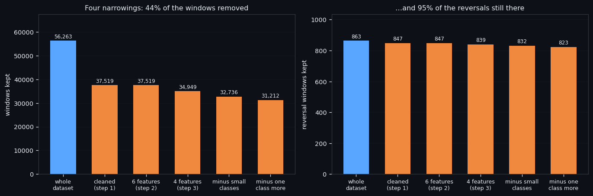
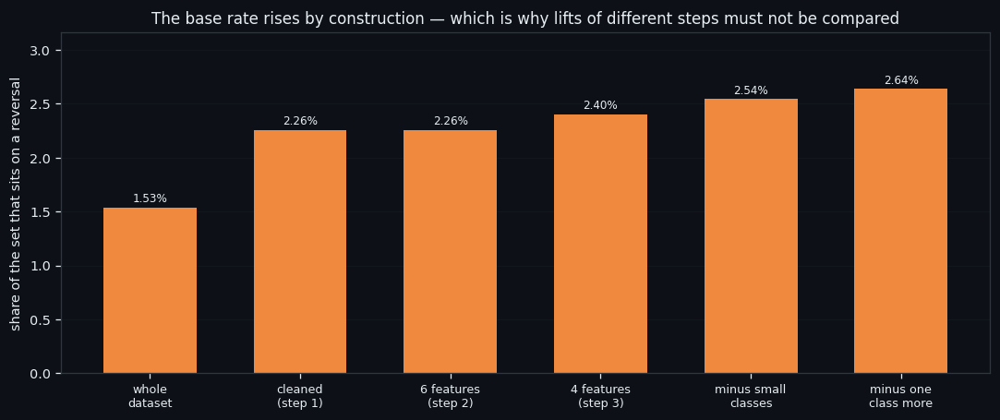
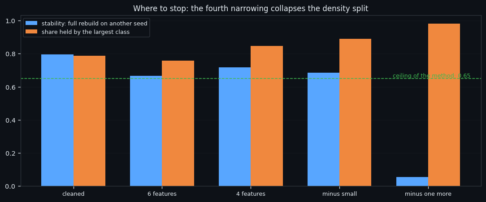
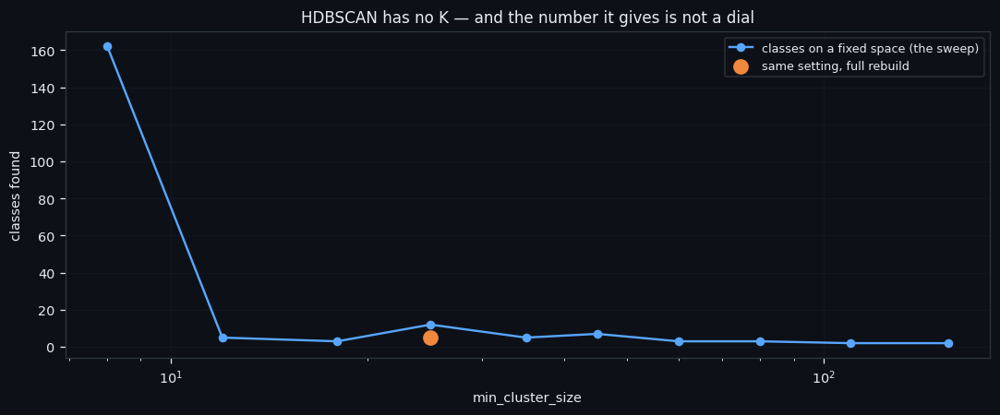

A Recipe, Not a Result: How We Clean an Order-Book Dataset
This is the least glamorous and most useful study of the series: not a finding, but a procedure. How to take a raw dataset of order-book windows and produce a clean one — 56,263 windows in, 31,212 out, 95% of the reversals still there — with every step checked, every trap written down, and the whole thing runnable on another coin by one command.
Full walkthrough — streamed from YouTube.
① The chain: four narrowings
The chain has four narrowings, each justified by the step before it.
| step | windows left | reversal windows left | what was removed and why | |---|---|---|---| | raw dataset | 56,263 | 863 | — | | cleaned | 37,519 | 847 | two independent definitions of "quiet" | | 6 features | 37,519 | 847 | the const walls dropped from the input | | 4 features | 34,949 | 839 | volumes dropped too; classes with no reversals removed | | smaller still | 32,736 | 832 | two small classes, a human decision | | one more | 31,212 | 823 | a class that owned no turning point at all |
The important discipline: every removal is decided by a label found on the same data, so the reversal rate in what remains rises mechanically — from 2.26% to 2.64%. That is arithmetic, not discovery, and it means the lift numbers of different steps must never be compared with each other. What can be compared is whether the axis stays put.
Everything in this series feeds one goal: an automated trading bot that reads the order book instead of the price. Data preparation is the part nobody publishes and everybody re-does badly. Writing it down once is how the rest of this project stops repeating itself.

② Eight features, six, four
Two of the steps ask a question worth asking on its own: which of the eight features are actually doing the work?
| input | k-means agreement with the previous step | HDBSCAN classes | the reversal-rich class | |---|---|---|---| | 8 features | — | 5 | ×2.63 | | 6 (both const walls dropped) | ARI 0.968, 99.2% of windows | 3 | ×2.38 | | 4 (volumes dropped too) | ARI 0.691, 91.7% | 2 | ×2.10 |
Dropping the walls changes essentially nothing — k-means agrees with itself on 99.2% of windows — and what disappears from HDBSCAN are exactly the small wall-shaped classes that had no reversals in them anyway. Dropping the volumes moves the boundary noticeably more, but the axis is still the same axis: the class widens, catches more reversals and therefore shows a lower lift.
Everything in this series feeds one goal: an automated trading bot that reads the order book instead of the price. Four features instead of eight is half the input a live model has to compute every second — worth knowing that it costs nothing.

③ Where to stop, and how you know
Where does this stop? Not at a number of steps, but at a diagnostic.
| step | stability of the split (rebuilt on another seed) | largest class holds | |---|---|---| | the cleaned set | 0.796 | 0.787 | | 6 features | 0.667 | 0.757 | | 4 features | 0.716 | 0.845 | | minus two small classes | 0.685 | 0.890 | | minus one class more | 0.056 | 0.982 |
The method's own ceiling is 0.65 for the largest share: above it, the split is "almost everything against a crumb", which reproduces itself out of nothing. The fourth narrowing crosses it decisively — 0.982 with stability collapsing to 0.056 — while k-means still agrees with the previous step at ARI 0.938. So it is the density-based split that dies, not the axis.
The last removal is instructive on its own. The class we dropped held 10 reversal windows spread across 8 different turning points, dominated none of them and owned none entirely — an average share of 0.017 per turn. Its reversal windows were quieter than its own ordinary windows. Nothing was lost.
Everything in this series feeds one goal: an automated trading bot that reads the order book instead of the price. Knowing when to stop cleaning is worth as much as knowing how to clean: an over-trimmed dataset trains a model that only works on the trimming.

④ The recipe itself
The whole procedure is published as an executable recipe — CLEANUP_DATASET.md, downloadable below. It contains the input format and the minimum data volume, the exact order of commands, each step with its control number, ten traps we walked into, a table of control values with tolerances, and the full source code pulled automatically from the working files, so it cannot drift from what actually runs.
The mechanical part is one command; the chain then stops by itself where a human decision begins and prints the table of candidates.
A few of the traps, since they generalise well beyond this project:
| trap | what happens if you ignore it | |---|---| | judging a clustering by the number of classes | our hard null produced 11 classes at the same noise share as real data | | measuring stability in a fixed space | the same setting gave 12 classes on a fixed map and 5 on a full rebuild | | throwing away the noise | it holds about a third of all reversal windows | | counting windows instead of events | one turning point produces up to nine windows |
What is next. With a clean dataset and a written recipe, the series moves back to the thing all of it is for: turning the "inflow" axis into a signal that survives fees. That means intersecting it with a second, independent signal, testing it on the other five coins, and measuring the whole chain — detector, then side, then entry — end to end. Everything in this series feeds one goal: an automated trading bot that reads the order book instead of the price. We are not there yet, and we will say so plainly when a number does not clear the 0.30% round-trip cost.

If this changed how you read the tape, the natural next step is Volume Is the Fuel — Not the Steering Wheel — We recorded the Binance order book every second for six coins over five months and ran eighteen tests on what volume really does.
Volume Is the Fuel — Not the Steering Wheel
We recorded the Binance order book every second for six coins over five months and ran eighteen tests on what volume really does.
About Market Research Lab — What We Collect and Why
Most market commentary is storytelling.
From Calm to Calm: a Standard for What Counts as a Signal (BTC)
We stopped defining market signals with a stopwatch.
The Wall That Goes Quiet: What Resting Liquidity Predicts
We measured resting limit liquidity sitting on both sides of the book second by second across six coins, and asked the only question that matters:….
Comments
Discussion is powered by GitHub. Enable it by adding secrets/giscus.json (repo IDs from giscus.app).